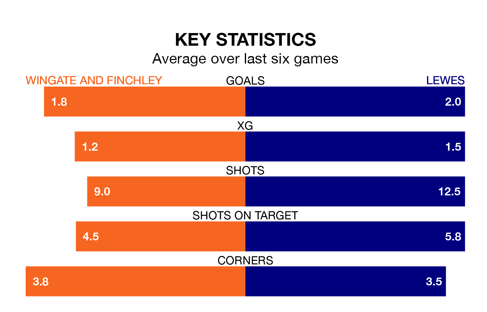

Lewes travel to Wingate and Finchley on Saturday in Isthmian Premier Division.
The visitors come into the game on the back of a defeat in their last match, having lost to Carshalton Athletic 3-1 at home.
The Blues also lost their last match, 3-0 against Dulwich Hamlet.
With 48 goals in 26 games so far this season, Wingate & Finchley are scoring more than average in the league with 1.8 goals per game. But they are conceding more than average too, letting in 47 goals at a rate of 1.8 per game.
Lewes are also above average scorers, with 1.8 goals per game, compared to a league average of 1.6. They have conceded 1.6 goals per game.
In the last 10 years, Wingate & Finchley and Lewes have played each other on 15 occasions. They won five each, and they drew five times.
On average, the Blues scored 1.3 goals and Lewes 1.7 in those matches.
Their last meeting was on November 11, when Wingate & Finchley won 2-1 away.
The Blues are sixth in the table after 26 games, of which they have won 14 and drawn two, earning 44 points.
The away team are three places behind the hosts in ninth, with 12 wins and five draws putting them on 41 points.
Wingate & Finchley are in mixed form in Isthmian Premier Division, with three wins and a draw from their last six games.
And also with three wins and a draw over that period, Lewes's form is identical – they have both taken 10 points from 18.
Updated: 10:40 (UTC), 01/02/24